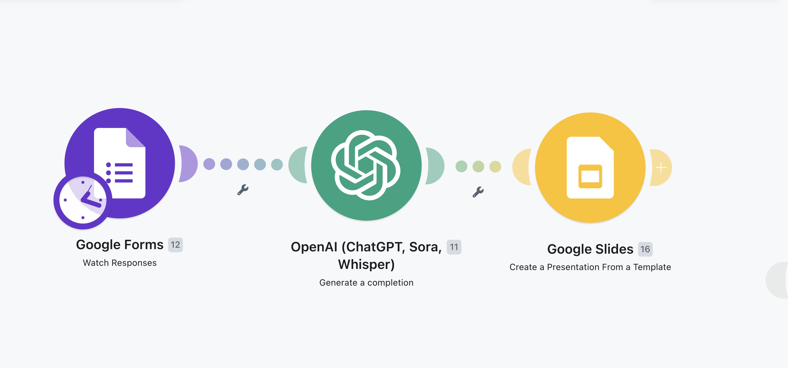

From novelty to a practical efficiency tool
60 minutes
A clear sense of which free and low-cost AI tools fit small businesses, and how to put one to work on a real task this week
Every slide has buffer time built in, so ask questions as we go. The 10–15 minutes of Q&A at the end is just for whatever's left
Asking ChatGPT a fun question is no longer the point. The useful question is: what repetitive work can this take off my plate this week?
These tools draft, summarize, research, and build. They still need your judgment. Treat them like a fast junior assistant, not an oracle
The businesses getting value are using AI on emails, proposals, research, simple apps, and automations — not waiting for a perfect strategy
You can get expert-level feedback on ideas, copy, and decisions any time, for a fraction of the cost of a consultant
The training required to build a useful internal tool has dropped from a few years to a few hours
Every hour you spend on drafts, data entry, and one-off research is an hour you are not selling, serving, or deciding. That is where AI pays off first
Best at remembering past conversations. Strong all-purpose starting point for writing and brainstorming
Combines a chatbot, coding assistant, and a strong skills feature. Especially good for long documents and building things
Built into Chrome and Google Workspace. Best when the work already lives in Gmail, Docs, or Sheets
Best at citing its sources. Use it when you need research you can check, not just a fluent answer
Fewest guardrails of any major model. Useful when other tools refuse a reasonable business question
Writing and chat: ChatGPT. Long docs and building: Claude. Google work: Gemini. Research with sources: Perplexity
Do not buy a stack of subscriptions. Pick one free account, use it for a week, and upgrade only if you hit a wall
Personal preference matters more than picking the "best" model. Switching later is easy. Starting is the hard part

A simple scenario. Click for a complex one
Build a simple CRM
Claude Code
GitHub
Supabase
Netlify
ChatGPT or Claude. Create the free account before you leave, or on the drive home
Do not comparison-shop all five
An email you have been putting off, a page of notes that need to become a post, a process you repeat every week
Paste it in and ask for a first draft
Use it on that one task this week
If it saves you time, do another
That is the whole plan
Feel free to share these slides or send them my way